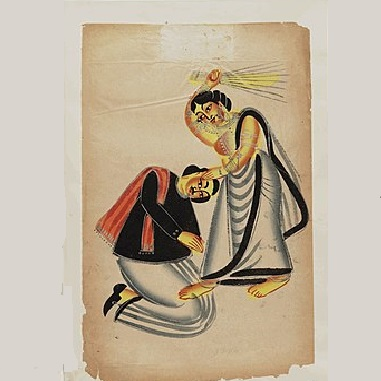

ACERCA DEL TEMA:
-

Violencia contra los varones
Los varones que son víctimas de la violencia doméstica a veces son reacios a denunciarla o a buscar ayuda. También existe un paradigma establecido de que solo los hombres perpetran violencia doméstica y que nunca son víctimas. Esto ha sido relacionado con las afirmaciones de que las mujeres solo son violentas en casos de represalia y de autodefensa, aun cuando la evidencia global de múltiples fuentes contradice esta idea. Como con otras formas de violencia contra el varón, la violencia de pareja es generalmente menos reconocida en la sociedad cuando las víctimas son varones.La violencia de las mujeres contra los varones es a menudo banalizada debido al la supuesta debilidad física de las mujeres; en tales casos, se omite considerar el uso de objetos peligrosos y armas que se puede efectuar. Una investigación llevada adelante desde 1990 ha identificado problemas en la percepción y un real sesgo cuando la policía está involucrada, negándose a reconocer a la víctima masculina incluso cuando se encuentre herida.
-

Violencia contra la mujer
"Violencia contra la mujer" es el término que utiliza la ONU para referirse a la violencia ejercida contra las mujeres por razón de su sexo, la define como: "todo acto de violencia basado en la pertenencia al sexo femenino que tenga o pueda tener como resultado un daño o sufrimiento físico, sexual o psicológico para la mujer, así como las amenazas de tales actos, la coacción o la privación arbitraria de la libertad, tanto si se producen en la vida pública como en la vida privada". Es un término ampliamente utilizado. Otro término de gran difusión es "violencia de género" Y si bien este otro término sería menos específico, ya que englobaría toda la violencia determinada por el sexo o género, "se refiere a aquella dirigida contra una persona en razón del género que él o ella tiene, así como de las expectativas sobre el rol que él o ella deba cumplir en una sociedad o cultura." Uno y otro términos suelen emplearse indistintamente. El término "violencia de género" surge a mediados del siglo XX desde ámbitos del feminismo para dar visibilidad a la violencia ejercida contra las mujeres por su condición de mujer como consecuencia del hecho histórico del patriarcado. Este término tendría el inconveniente de su posible abstracción si no se contextualiza en las relaciones de poder entre sexos que penaliza a la mujer y es causa de que, aunque se pueda ser víctima de la violencia de género independientemente del sexo, son las mujeres y niñas las mayoritariamente afectadas.